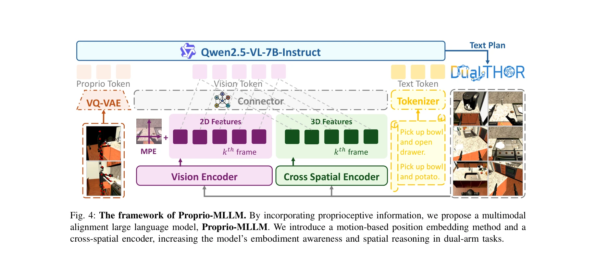

Essence

Fig. 1: DualTHOR is a novel simulator specifically tai-
이 논문은 이중팔 휴머노이드 로봇의 장기 계획을 위해 DualTHOR 시뮬레이터와 고유감각(proprioception)을 인식하는 Proprio-MLLM을 제안하며, 기존 MLLM의 구현화 인식 부족을 해결한다.
저자: Boyu Li, Siyuan He, Hang Xu, Haoqi Yuan, Xinrun Xu, Yu Zang, Liwei Hu, Junpeng Yue, Zhenxiong Jiang, Pengbo Hu, Börje F. Karlsson, Yehui Tang, Zongqing Lu | 날짜: 2025-10-09 | URL: https://arxiv.org/abs/2510.07882
Fig. 1: DualTHOR is a novel simulator specifically tai-
이 논문은 이중팔 휴머노이드 로봇의 장기 계획을 위해 DualTHOR 시뮬레이터와 고유감각(proprioception)을 인식하는 Proprio-MLLM을 제안하며, 기존 MLLM의 구현화 인식 부족을 해결한다.

Fig. 4: The framework of Proprio-MLLM. By incorporating proprioceptive information, we propose a multimodal
Fig. 4: The framework of Proprio-MLLM. By incorporating proprioceptive information, we propose a multimodal
총평: 이 논문은 이중팔 휴머노이드 로봇의 장기 계획을 위한 체계적인 시뮬레이션 플랫폼과 고유감각 기반 MLLM을 제시함으로써 구현화 AI 분야에 중요한 기여를 한다. 실제 로봇에서의 성능 검증과 더 복잡한 협력 작업 확장이 이루어진다면 더욱 영향력 있는 연구가 될 것이다.